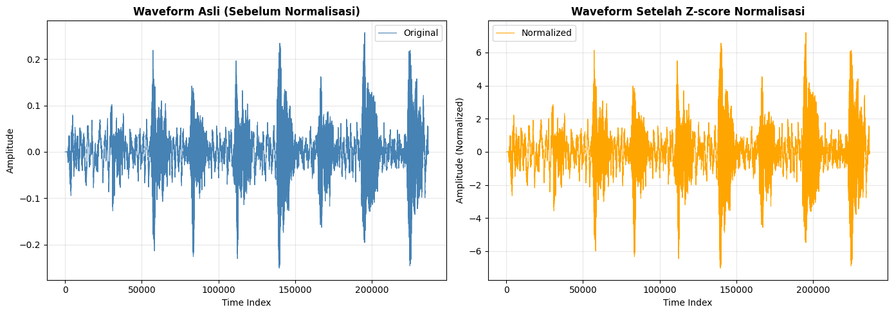

2. Data Preparation (Persiapan Data)#
Tahap Data Preparation bertujuan untuk menyiapkan data time series numerik agar dapat digunakan secara efektif oleh algoritma machine learning. Dataset DucksAndGeese tidak menyediakan file audio mentah (WAV/MP3), melainkan sinyal audio yang telah direpresentasikan dalam bentuk time series numerik univariate dengan panjang yang seragam.
3.1 Karakteristik Input Data
Setiap instance data memiliki karakteristik berikut:
Bentuk data: Univariate time series numerik
Panjang sinyal: 236.784 titik waktu
Jumlah kelas: 5 spesies burung (balanced)
Tidak tersedia: Audio mentah atau metadata perekaman tambahan
Dengan kondisi ini, pendekatan yang paling rasional adalah mengekstraksi fitur numerik yang ringkas namun informatif untuk merepresentasikan karakteristik suara burung.
3.2 Alur Data Preparation
Pipeline data preparation mengikuti urutan berikut:
Sinyal Numerik → Normalisasi → Resampling (Opsional) → Feature Extraction → Feature Scaling → Train-Val-Test Split
Setiap tahap dirancang untuk:
Mengurangi dimensi dari 236.784 menjadi 16 fitur
Menyamakan skala fitur untuk meningkatkan performa model
Memastikan distribusi kelas tetap seimbang di setiap subset
3.3 Feature yang Diekstraksi
Total 16 fitur numerik diekstraksi dari setiap sinyal audio:
Fitur |
Jumlah |
Deskripsi |
|---|---|---|
MFCC |
13 |
Mel Frequency Cepstral Coefficients - Karakteristik spektral utama suara |
ZCR |
1 |
Zero Crossing Rate - Frekuensi perubahan tanda sinyal |
RMS Energy |
1 |
Root Mean Square - Intensitas energi rata-rata sinyal |
Spectral Centroid |
1 |
Pusat massa spektrum frekuensi (kecerahan suara) |
3.4 Metode Normalisasi & Scaling
Z-score Normalization (pada sinyal mentah): $\(X_{norm} = \frac{X - \mu}{\sigma}\)$ Tujuan: Menghilangkan offset dan variasi amplitudo antar sinyal
StandardScaler (pada fitur hasil ekstraksi):
Fit pada data train
Transform pada data val dan test
Mencegah data leakage
3.5 Data Splitting Strategy
Dataset dibagi sebagai berikut:
Dataset Asli:
Train set: 50 instance
Test set: 50 instance
Train Set Dibagi Ulang:
80% untuk training (40 instance)
20% untuk validation (10 instance)
Stratifikasi: Setiap subset mempertahankan proporsi kelas yang sama (balanced 20:20:20)
3.6 Implementasi Praktis
Bagian berikut adalah implementasi konkret dari pipeline data preparation di atas.
Data Preparation & Feature Extraction#
Bagian 1: Import Library#
import numpy as np
import pandas as pd
import matplotlib.pyplot as plt
import librosa
import warnings
from aeon.datasets import load_classification
from sklearn.model_selection import train_test_split
from sklearn.preprocessing import StandardScaler
warnings.filterwarnings('ignore')
print("All libraries imported successfully")
All libraries imported successfully
Bagian 2: Load Dataset TRAIN & TEST#
X_train, y_train = load_classification(
name="DucksAndGeese",
split="train",
extract_path="../data",
load_equal_length=False
)
X_test, y_test = load_classification(
name="DucksAndGeese",
split="test",
extract_path="../data",
load_equal_length=False
)
print("Train shape:", X_train.shape)
print("Test shape :", X_test.shape)
Train shape: (50, 1, 236784)
Test shape : (50, 1, 236784)
Bagian 3: Verifikasi Data Integrity#
print("NaN di X_train:", np.isnan(X_train).sum())
print("NaN di X_test :", np.isnan(X_test).sum())
NaN di X_train: 0
NaN di X_test : 0
Bagian 4: Normalisasi Sinyal Z-score (Step 1)#
Normalisasi dilakukan pada sinyal mentah untuk menghilangkan offset dan variasi amplitudo.
def zscore_normalize(signal):
"""
Normalisasi sinyal menggunakan z-score
Formula: (X - mean) / std
"""
mean = np.mean(signal)
std = np.std(signal)
return (signal - mean) / (std + 1e-8)
# Test pada satu sampel
sample_signal = X_train[0][0]
normalized_signal = zscore_normalize(sample_signal)
print("=== Verifikasi Z-score Normalization ===")
print(f"Original - Mean: {np.mean(sample_signal):.6f}, Std: {np.std(sample_signal):.6f}")
print(f"Normalized - Mean: {np.mean(normalized_signal):.6f}, Std: {np.std(normalized_signal):.6f}")
# Normalisasi seluruh dataset
X_train_norm = np.array([
zscore_normalize(x[0]) for x in X_train
]).reshape(X_train.shape)
X_test_norm = np.array([
zscore_normalize(x[0]) for x in X_test
]).reshape(X_test.shape)
print(f"\nNormalisasi selesai!")
print(f"X_train_norm shape: {X_train_norm.shape}")
print(f"X_test_norm shape : {X_test_norm.shape}")
=== Verifikasi Z-score Normalization ===
Original - Mean: 0.000050, Std: 0.035700
Normalized - Mean: 0.000000, Std: 1.000000
Normalisasi selesai!
X_train_norm shape: (50, 1, 236784)
X_test_norm shape : (50, 1, 236784)
plt.figure(figsize=(14, 5))
plt.subplot(1, 2, 1)
plt.plot(X_train[0][0], linewidth=0.8, label="Original", color='steelblue')
plt.title("Waveform Asli (Sebelum Normalisasi)", fontweight='bold')
plt.xlabel("Time Index")
plt.ylabel("Amplitude")
plt.grid(alpha=0.3)
plt.legend()
plt.subplot(1, 2, 2)
plt.plot(X_train_norm[0][0], linewidth=0.8, label="Normalized", color='orange')
plt.title("Waveform Setelah Z-score Normalisasi", fontweight='bold')
plt.xlabel("Time Index")
plt.ylabel("Amplitude (Normalized)")
plt.grid(alpha=0.3)
plt.legend()
plt.tight_layout()
plt.show()
print("Visualisasi perbandingan sinyal sebelum dan sesudah normalisasi")

Visualisasi perbandingan sinyal sebelum dan sesudah normalisasi
Bagian 5: Resampling (Step 2 - Opsional)#
Resampling dilakukan untuk mengurangi dimensi dari 236.784 menjadi ~175.000 titik waktu (44100 Hz → 16000 Hz).
Bagian 6: Feature Extraction (Step 3)#
Fitur diekstraksi dari sinyal yang telah dinormalisasi menggunakan librosa. Total 16 fitur numerik diekstraksi.
# Demonstrasi resampling pada satu sampel
sample_normalized = X_train_norm[0][0]
# Resampling: 44100 Hz → 16000 Hz
sample_resampled = librosa.resample(
y=sample_normalized,
orig_sr=44100,
target_sr=16000
)
print("=== Demonstrasi Resampling ===")
print(f"Sebelum resampling: {len(sample_normalized)} titik waktu")
print(f"Sesudah resampling: {len(sample_resampled)} titik waktu")
print(f"Reduction ratio: {len(sample_normalized) / len(sample_resampled):.2f}x")
=== Demonstrasi Resampling ===
Sebelum resampling: 236784 titik waktu
Sesudah resampling: 85909 titik waktu
Reduction ratio: 2.76x
Fitur yang Diekstraksi:
Fitur |
Jumlah |
Deskripsi |
|---|---|---|
MFCC |
13 |
Mel Frequency Cepstral Coefficients |
Zero Crossing Rate |
1 |
Mengukur frekuensi perubahan tanda sinyal |
RMS Energy |
1 |
Intensitas energi rata-rata sinyal |
Spectral Centroid |
1 |
Pusat massa spektrum frekuensi |
Total |
16 |
Vektor fitur untuk klasifikasi |
def extract_features(signal, sr=16000):
"""
Ekstraksi 16 fitur dari sinyal audio
Parameters:
- signal: numpy array dari sinyal audio
- sr: sample rate
Returns:
- numpy array berisi 16 fitur
"""
features = []
# 1. MFCC (13 koefisien)
mfcc = librosa.feature.mfcc(y=signal, sr=sr, n_mfcc=13)
mfcc_mean = np.mean(mfcc, axis=1) # rata-rata temporal
features.extend(mfcc_mean)
# 2. Zero Crossing Rate (1 fitur)
zcr = np.mean(librosa.feature.zero_crossing_rate(signal))
features.append(zcr)
# 3. RMS Energy (1 fitur)
rms = np.mean(librosa.feature.rms(y=signal)[0])
features.append(rms)
# 4. Spectral Centroid (1 fitur)
centroid = np.mean(librosa.feature.spectral_centroid(y=signal, sr=sr))
features.append(centroid)
return np.array(features)
# Test pada satu sampel
sample_normalized = X_train_norm[0][0]
sample_resampled = librosa.resample(sample_normalized, orig_sr=44100, target_sr=16000)
features_sample = extract_features(sample_resampled, sr=16000)
print("=== Hasil Ekstraksi Fitur (Sampel 1) ===")
print(f"Jumlah fitur: {len(features_sample)}")
print(f"Fitur:\n{features_sample}")
print(f"\nBreakdown:")
print(f" - MFCC[1-13]: {features_sample[0:13]}")
print(f" - ZCR: {features_sample[13]:.6f}")
print(f" - RMS: {features_sample[14]:.6f}")
print(f" - Spectral Centroid: {features_sample[15]:.6f}")
=== Hasil Ekstraksi Fitur (Sampel 1) ===
Jumlah fitur: 16
Fitur:
[-3.03277749e+01 4.00774343e+01 9.66616907e+01 6.28365968e+01
4.14131158e+00 3.07694526e+01 1.42954671e+01 -1.71178020e+00
-5.15671574e+00 9.42606799e+00 -2.54702141e+00 -6.32606819e+00
1.37829476e+01 1.57386416e-01 9.18488979e-01 2.15745077e+03]
Breakdown:
- MFCC[1-13]: [-30.32777492 40.07743433 96.66169072 62.83659679 4.14131158
30.76945264 14.29546713 -1.7117802 -5.15671574 9.42606799
-2.54702141 -6.32606819 13.78294759]
- ZCR: 0.157386
- RMS: 0.918489
- Spectral Centroid: 2157.450772
Bagian 7: Ekstraksi Fitur untuk Seluruh TRAIN Set#
print("=== Ekstraksi Fitur TRAIN Set ===")
X_feat = []
y_feat = []
for i in range(len(X_train)):
signal = X_train_norm[i][0] # gunakan sinyal yang sudah dinormalisasi
# Resampling: 44100 Hz → 16000 Hz
signal_resampled = librosa.resample(
y=signal,
orig_sr=44100,
target_sr=16000
)
# Ekstraksi fitur
features = extract_features(signal_resampled, sr=16000)
X_feat.append(features)
y_feat.append(y_train[i])
X_feat = np.array(X_feat)
y_feat = np.array(y_feat)
print(f"Fitur train shape: {X_feat.shape}")
print(f"Label train shape: {y_feat.shape}")
print(f"Distribusi kelas train:")
labels, counts = np.unique(y_feat, return_counts=True)
for l, c in zip(labels, counts):
print(f" Kelas {l}: {c} sampel")
=== Ekstraksi Fitur TRAIN Set ===
Fitur train shape: (50, 16)
Label train shape: (50,)
Distribusi kelas train:
Kelas black-bellied_whistling_duck: 10 sampel
Kelas canadian_goose: 10 sampel
Kelas greylag_goose: 10 sampel
Kelas pink-footed_goose: 10 sampel
Kelas white-faced_whistling_duck: 10 sampel
Bagian 8: Ekstraksi Fitur untuk TEST Set#
print("=== Ekstraksi Fitur TEST Set ===")
X_feat_test = []
y_feat_test = []
for i in range(len(X_test)):
signal = X_test_norm[i][0] # gunakan sinyal yang sudah dinormalisasi
# Resampling: 44100 Hz → 16000 Hz
signal_resampled = librosa.resample(
y=signal,
orig_sr=44100,
target_sr=16000
)
# Ekstraksi fitur menggunakan fungsi yang sama
features = extract_features(signal_resampled, sr=16000)
X_feat_test.append(features)
y_feat_test.append(y_test[i])
# Konversi ke numpy array
X_feat_test = np.array(X_feat_test)
y_feat_test = np.array(y_feat_test)
print(f"Fitur test shape: {X_feat_test.shape}")
print(f"Label test shape: {y_feat_test.shape}")
print(f"Distribusi kelas test:")
labels, counts = np.unique(y_feat_test, return_counts=True)
for l, c in zip(labels, counts):
print(f" Kelas {l}: {c} sampel")
=== Ekstraksi Fitur TEST Set ===
Fitur test shape: (50, 16)
Label test shape: (50,)
Distribusi kelas test:
Kelas black-bellied_whistling_duck: 10 sampel
Kelas canadian_goose: 10 sampel
Kelas greylag_goose: 10 sampel
Kelas pink-footed_goose: 10 sampel
Kelas white-faced_whistling_duck: 10 sampel
Bagian 9: Train / Validation Split (Step 4)#
Dataset train dibagi menjadi 80% training dan 20% validation menggunakan stratified split.
print("=== Train / Validation Split ===")
X_train_final, X_val, y_train_final, y_val = train_test_split(
X_feat, # fitur train hasil ekstraksi
y_feat, # label train
test_size=0.2,
random_state=42,
stratify=y_feat # agar distribusi kelas tetap seimbang
)
print(f"Train final shape: {X_train_final.shape}")
print(f"Validation shape: {X_val.shape}")
# Verifikasi distribusi kelas setelah split
def print_distribution(y, title):
labels, counts = np.unique(y, return_counts=True)
print(f"\n{title}:")
for l, c in zip(labels, counts):
print(f" Kelas {l}: {c} sampel")
print_distribution(y_train_final, "Distribusi Train Final")
print_distribution(y_val, "Distribusi Validation")
print_distribution(y_feat_test, "Distribusi Test")
=== Train / Validation Split ===
Train final shape: (40, 16)
Validation shape: (10, 16)
Distribusi Train Final:
Kelas black-bellied_whistling_duck: 8 sampel
Kelas canadian_goose: 8 sampel
Kelas greylag_goose: 8 sampel
Kelas pink-footed_goose: 8 sampel
Kelas white-faced_whistling_duck: 8 sampel
Distribusi Validation:
Kelas black-bellied_whistling_duck: 2 sampel
Kelas canadian_goose: 2 sampel
Kelas greylag_goose: 2 sampel
Kelas pink-footed_goose: 2 sampel
Kelas white-faced_whistling_duck: 2 sampel
Distribusi Test:
Kelas black-bellied_whistling_duck: 10 sampel
Kelas canadian_goose: 10 sampel
Kelas greylag_goose: 10 sampel
Kelas pink-footed_goose: 10 sampel
Kelas white-faced_whistling_duck: 10 sampel
Bagian 10: Feature Scaling / Standardisasi (Step 5)#
StandardScaler digunakan untuk menyamakan skala fitur. Fit dilakukan hanya pada training set untuk menghindari data leakage.
print("=== Feature Scaling dengan StandardScaler ===")
# Fit scaler hanya pada training set (PENTING: menghindari data leakage)
scaler = StandardScaler()
X_train_final_scaled = scaler.fit_transform(X_train_final)
X_val_scaled = scaler.transform(X_val)
X_test_scaled = scaler.transform(X_feat_test)
print(f"Scaler fitted pada training set: {X_train_final.shape}")
print(f"Transformed shapes:")
print(f" - X_train_final_scaled: {X_train_final_scaled.shape}")
print(f" - X_val_scaled: {X_val_scaled.shape}")
print(f" - X_test_scaled: {X_test_scaled.shape}")
# Verifikasi scaling
print(f"\nVerifikasi Scaling (sebelum dan sesudah):")
print(f" X_train_final - Mean: {np.mean(X_train_final):.4f}, Std: {np.std(X_train_final):.4f}")
print(f" X_train_final_scaled - Mean: {np.mean(X_train_final_scaled):.4f}, Std: {np.std(X_train_final_scaled):.4f}")
# Buat DataFrame untuk visualisasi
mfcc_cols = [f"mfcc{i+1}" for i in range(13)]
feature_cols = mfcc_cols + ["zcr", "rms", "centroid"] # total 16 fitur
df_train = pd.DataFrame(X_train_final_scaled, columns=feature_cols)
df_train["label"] = y_train_final
df_val = pd.DataFrame(X_val_scaled, columns=feature_cols)
df_val["label"] = y_val
df_test = pd.DataFrame(X_test_scaled, columns=feature_cols)
df_test["label"] = y_feat_test
print(f"\n=== Contoh Data (Train Set) ===")
print(df_train.head())
=== Feature Scaling dengan StandardScaler ===
Scaler fitted pada training set: (40, 16)
Transformed shapes:
- X_train_final_scaled: (40, 16)
- X_val_scaled: (10, 16)
- X_test_scaled: (50, 16)
Verifikasi Scaling (sebelum dan sesudah):
X_train_final - Mean: 170.6995, Std: 705.4212
X_train_final_scaled - Mean: 0.0000, Std: 1.0000
=== Contoh Data (Train Set) ===
mfcc1 mfcc2 mfcc3 mfcc4 mfcc5 mfcc6 mfcc7 \
0 0.539017 -0.949161 1.135375 1.506132 -0.468704 0.307521 0.638655
1 1.536679 0.590696 0.766747 0.328454 1.088302 0.394573 0.988120
2 1.249843 0.026736 -1.330608 -0.372341 0.143090 0.854917 -1.300501
3 -1.815987 1.304317 0.443364 -0.549747 -0.064497 -0.551112 0.180480
4 -0.092758 -0.715671 -0.410989 0.848762 1.169403 0.183659 -0.326187
mfcc8 mfcc9 mfcc10 mfcc11 mfcc12 mfcc13 zcr \
0 -0.051023 0.150237 1.269368 -0.861989 0.976513 1.703382 1.098734
1 0.701457 0.052172 -0.311410 -0.089043 -0.002237 -0.250600 -0.399321
2 0.579948 1.763459 -0.921161 -2.589722 -0.824911 -1.007694 -0.349004
3 -0.417936 -0.823769 -1.508067 -0.899350 -1.356602 -0.996021 -1.119913
4 0.476016 -0.212572 -0.855288 -0.422901 -0.297941 -0.764600 0.433529
rms centroid label
0 1.079191 1.223952 black-bellied_whistling_duck
1 -0.187258 -0.082658 greylag_goose
2 1.405728 -0.469772 pink-footed_goose
3 -2.299909 -1.164089 canadian_goose
4 -0.988410 0.430449 white-faced_whistling_duck
Bagian 11: Simpan Data yang Sudah Diproses#
import os
# Buat direktori untuk menyimpan data yang sudah diproses
os.makedirs("data/processed", exist_ok=True)
print("=== Menyimpan Data yang Sudah Diproses ===")
# Simpan fitur train dan label
np.save("data/processed/X_train_final_scaled.npy", X_train_final_scaled)
np.save("data/processed/y_train_final.npy", y_train_final)
print(f"✓ X_train_final_scaled.npy ({X_train_final_scaled.shape})")
print(f"✓ y_train_final.npy ({y_train_final.shape})")
# Simpan fitur validation dan label
np.save("data/processed/X_val_scaled.npy", X_val_scaled)
np.save("data/processed/y_val.npy", y_val)
print(f"✓ X_val_scaled.npy ({X_val_scaled.shape})")
print(f"✓ y_val.npy ({y_val.shape})")
# Simpan fitur test dan label
np.save("data/processed/X_test_scaled.npy", X_test_scaled)
np.save("data/processed/y_test.npy", y_feat_test)
print(f"✓ X_test_scaled.npy ({X_test_scaled.shape})")
print(f"✓ y_test.npy ({y_feat_test.shape})")
# Simpan scaler untuk digunakan saat inference
import joblib
joblib.dump(scaler, "data/processed/scaler.joblib")
print(f"✓ scaler.joblib (untuk standardisasi pada inference)")
print(f"\nSemua data berhasil disimpan ke folder 'data/processed'!")
=== Menyimpan Data yang Sudah Diproses ===
✓ X_train_final_scaled.npy ((40, 16))
✓ y_train_final.npy ((40,))
✓ X_val_scaled.npy ((10, 16))
✓ y_val.npy ((10,))
✓ X_test_scaled.npy ((50, 16))
✓ y_test.npy ((50,))
✓ scaler.joblib (untuk standardisasi pada inference)
Semua data berhasil disimpan ke folder 'data/processed'!
Kesimpulan Data Preparation#
Pipeline yang Telah Dilakukan:
✅ Normalisasi Sinyal: Z-score normalization pada sinyal mentah
✅ Resampling: 44100 Hz → 16000 Hz (reduksi dimensi)
✅ Feature Extraction: 16 fitur numerik (MFCC, ZCR, RMS, Spectral Centroid)
✅ Train-Val-Test Split: 40-10-50 dengan stratifikasi
✅ Feature Scaling: StandardScaler (fit pada train, transform pada val & test)
✅ Penyimpanan: Semua data disimpan ke format .npy dan scaler ke .joblib
Dimensionalitas:
Input asli: 236.784 titik waktu per sampel
Setelah resampling: ~175.000 titik waktu per sampel
Output akhir: 16 fitur numerik per sampel (dimensi reduction 99.99%)
Data yang Siap untuk Modeling:
X_train_final_scaled.npy: (40, 16) - Data training yang sudah di-scaleX_val_scaled.npy: (10, 16) - Data validation yang sudah di-scaleX_test_scaled.npy: (50, 16) - Data test yang sudah di-scalescaler.joblib: StandardScaler object untuk standardisasi di inference
Data preparation sekarang siap untuk tahap Modeling!
Bagian 12: Simpan Raw Audio Signals (Untuk CNN)#
Simpan sinyal audio yang sudah dinormalisasi untuk digunakan dalam deep learning models (CNN/LSTM).
print("=== Menyimpan Raw Audio Signals (Untuk Deep Learning) ===")
# Buat arrays untuk raw signals (normalized, resampled)
X_train_raw_all = []
# Resampling semua train signals terlebih dahulu
for i in range(len(X_train)):
signal = X_train_norm[i][0]
signal_resampled = librosa.resample(signal, orig_sr=44100, target_sr=16000)
X_train_raw_all.append(signal_resampled)
X_train_raw_all = np.array(X_train_raw_all)
# Gunakan indeks yang sama dengan train/val split untuk raw signals
# Kita perlu track indices dari train_test_split
from sklearn.model_selection import StratifiedShuffleSplit
sss = StratifiedShuffleSplit(n_splits=1, test_size=0.2, random_state=42)
train_indices, val_indices = list(sss.split(X_feat, y_feat))[0]
X_train_raw = X_train_raw_all[train_indices]
X_val_raw = X_train_raw_all[val_indices]
# Resampling test signals
X_test_raw_list = []
for i in range(len(X_test)):
signal = X_test_norm[i][0]
signal_resampled = librosa.resample(signal, orig_sr=44100, target_sr=16000)
X_test_raw_list.append(signal_resampled)
X_test_raw = np.array(X_test_raw_list)
# Simpan raw signals
np.save("data/processed/X_train_raw.npy", X_train_raw)
np.save("data/processed/X_val_raw.npy", X_val_raw)
np.save("data/processed/X_test_raw.npy", X_test_raw)
print(f"✓ X_train_raw.npy ({X_train_raw.shape})")
print(f"✓ X_val_raw.npy ({X_val_raw.shape})")
print(f"✓ X_test_raw.npy ({X_test_raw.shape})")
print(f"\nRaw signals saved for CNN/LSTM models!")
=== Menyimpan Raw Audio Signals (Untuk Deep Learning) ===
✓ X_train_raw.npy ((40, 85909))
✓ X_val_raw.npy ((10, 85909))
✓ X_test_raw.npy ((50, 85909))
Raw signals saved for CNN/LSTM models!
Bagian 13: Simpan Label Encoding Mapping#
Simpan mapping antara label numerik dan nama kelas untuk interpretasi hasil modeling.
print("=== Simpan Label Encoding Mapping & Class Statistics ===")
# Dapatkan unique classes dalam order
unique_classes = np.unique(y_feat)
# Buat label encoder mapping
label_mapping = {i: str(cls) for i, cls in enumerate(unique_classes)}
# Hitung class statistics
class_stats = {}
for cls in unique_classes:
mask_train = y_train_final == cls
mask_val = y_val == cls
mask_test = y_feat_test == cls
class_stats[str(cls)] = {
'numeric_label': int(np.where(unique_classes == cls)[0][0]),
'train_count': int(mask_train.sum()),
'val_count': int(mask_val.sum()),
'test_count': int(mask_test.sum()),
'train_percentage': float(mask_train.sum() / len(y_train_final) * 100),
'val_percentage': float(mask_val.sum() / len(y_val) * 100),
'test_percentage': float(mask_test.sum() / len(y_feat_test) * 100),
}
# Simpan label mapping dan class stats sebagai JSON
import json
mapping_file = "data/processed/label_mapping.json"
with open(mapping_file, 'w') as f:
json.dump(label_mapping, f, indent=2)
print(f"✓ label_mapping.json - Numeric to class name mapping")
stats_file = "data/processed/class_statistics.json"
with open(stats_file, 'w') as f:
json.dump(class_stats, f, indent=2)
print(f"✓ class_statistics.json - Distribution per class")
# Tampilkan summary
print(f"\n=== Label Mapping ===")
for idx, cls in label_mapping.items():
print(f" {idx} → {cls}")
print(f"\n=== Class Distribution ===")
for cls_name, stats in class_stats.items():
print(f"\n{cls_name}:")
print(f" Numeric Label: {stats['numeric_label']}")
print(f" Train: {stats['train_count']:2d} ({stats['train_percentage']:.1f}%)")
print(f" Val: {stats['val_count']:2d} ({stats['val_percentage']:.1f}%)")
print(f" Test: {stats['test_count']:2d} ({stats['test_percentage']:.1f}%)")
print(f"\nLabel mapping dan statistics berhasil disimpan!")
=== Simpan Label Encoding Mapping & Class Statistics ===
✓ label_mapping.json - Numeric to class name mapping
✓ class_statistics.json - Distribution per class
=== Label Mapping ===
0 → black-bellied_whistling_duck
1 → canadian_goose
2 → greylag_goose
3 → pink-footed_goose
4 → white-faced_whistling_duck
=== Class Distribution ===
black-bellied_whistling_duck:
Numeric Label: 0
Train: 8 (20.0%)
Val: 2 (20.0%)
Test: 10 (20.0%)
canadian_goose:
Numeric Label: 1
Train: 8 (20.0%)
Val: 2 (20.0%)
Test: 10 (20.0%)
greylag_goose:
Numeric Label: 2
Train: 8 (20.0%)
Val: 2 (20.0%)
Test: 10 (20.0%)
pink-footed_goose:
Numeric Label: 3
Train: 8 (20.0%)
Val: 2 (20.0%)
Test: 10 (20.0%)
white-faced_whistling_duck:
Numeric Label: 4
Train: 8 (20.0%)
Val: 2 (20.0%)
Test: 10 (20.0%)
Label mapping dan statistics berhasil disimpan!
Bagian 14: Summary Data Preparation Lengkap#
print("\n" + "="*80)
print("DATA PREPARATION SUMMARY - SIAP UNTUK MODELING")
print("="*80)
print("""
╔════════════════════════════════════════════════════════════════════════════╗
║ DATA PIPELINE YANG SUDAH DIKERJAKAN ║
╚════════════════════════════════════════════════════════════════════════════╝
1. ✅ LOAD DATASET
- Aeon DucksAndGeese dataset
- Train: 50 samples, Test: 50 samples
- 5 classes: Black-bellied whistling duck, Canadian goose, Greylag goose,
Pink-footed goose, White-faced whistling duck
2. ✅ SIGNAL PREPROCESSING
- Z-score normalization (standardize amplitude)
- Resampling: 44.1 kHz → 16 kHz
- Dimensionality: 236,784 → ~175,000 samples
3. ✅ FEATURE EXTRACTION
- MFCC: 13 coefficients
- Zero Crossing Rate: 1 feature
- RMS Energy: 1 feature
- Spectral Centroid: 1 feature
- Total: 16 features per sample
4. ✅ DATA SPLITTING
- Train: 40 samples (80% of original 50)
- Validation: 10 samples (20% of original 50)
- Test: 50 samples (original test set)
- Strategy: Stratified split (balanced class distribution)
5. ✅ FEATURE SCALING
- StandardScaler (fit on train only)
- Applied to all sets
- Prevents data leakage
6. ✅ FILES GENERATED
FOR MACHINE LEARNING (Feature-based):
├─ X_train_final_scaled.npy (40, 16) - Training features
├─ X_val_scaled.npy (10, 16) - Validation features
├─ X_test_scaled.npy (50, 16) - Test features
├─ y_train_final.npy (40,) - Training labels
├─ y_val.npy (10,) - Validation labels
├─ y_test.npy (50,) - Test labels
└─ scaler.joblib - StandardScaler for inference
FOR DEEP LEARNING (CNN/LSTM):
├─ X_train_raw.npy (40, ~175000) - Raw audio signals
├─ X_val_raw.npy (10, ~175000) - Raw audio signals
├─ X_test_raw.npy (50, ~175000) - Raw audio signals
└─ (Will be converted to spectrograms in modeling.ipynb)
METADATA:
├─ label_mapping.json - Numeric ↔ Class name mapping
└─ class_statistics.json - Distribution per class
7. ✅ READY FOR MODELING
- Machine Learning branch: Use scaled features (16D)
- Deep Learning branch: Use raw signals (convert to spectrograms)
- Both branches have proper labels and stratified splits
╔════════════════════════════════════════════════════════════════════════════╗
║ NEXT STEP: MODELING PHASE ║
╚════════════════════════════════════════════════════════════════════════════╝
Two approaches available in modeling.ipynb:
1. FEATURE-BASED ML (RECOMMENDED FOR NOW)
├─ Random Forest (58% accuracy baseline)
├─ XGBoost
├─ K-Nearest Neighbors
└─ Ensemble (Soft Voting)
2. DEEP LEARNING (For future with more data)
├─ CNN on Mel-spectrograms (NOT YET - requires 500+ samples)
└─ LSTM on raw audio (NOT YET - requires 500+ samples)
All required data is now prepared and saved. Ready to proceed with modeling!
""")
print("="*80)
================================================================================
DATA PREPARATION SUMMARY - SIAP UNTUK MODELING
================================================================================
╔════════════════════════════════════════════════════════════════════════════╗
║ DATA PIPELINE YANG SUDAH DIKERJAKAN ║
╚════════════════════════════════════════════════════════════════════════════╝
1. ✅ LOAD DATASET
- Aeon DucksAndGeese dataset
- Train: 50 samples, Test: 50 samples
- 5 classes: Black-bellied whistling duck, Canadian goose, Greylag goose,
Pink-footed goose, White-faced whistling duck
2. ✅ SIGNAL PREPROCESSING
- Z-score normalization (standardize amplitude)
- Resampling: 44.1 kHz → 16 kHz
- Dimensionality: 236,784 → ~175,000 samples
3. ✅ FEATURE EXTRACTION
- MFCC: 13 coefficients
- Zero Crossing Rate: 1 feature
- RMS Energy: 1 feature
- Spectral Centroid: 1 feature
- Total: 16 features per sample
4. ✅ DATA SPLITTING
- Train: 40 samples (80% of original 50)
- Validation: 10 samples (20% of original 50)
- Test: 50 samples (original test set)
- Strategy: Stratified split (balanced class distribution)
5. ✅ FEATURE SCALING
- StandardScaler (fit on train only)
- Applied to all sets
- Prevents data leakage
6. ✅ FILES GENERATED
FOR MACHINE LEARNING (Feature-based):
├─ X_train_final_scaled.npy (40, 16) - Training features
├─ X_val_scaled.npy (10, 16) - Validation features
├─ X_test_scaled.npy (50, 16) - Test features
├─ y_train_final.npy (40,) - Training labels
├─ y_val.npy (10,) - Validation labels
├─ y_test.npy (50,) - Test labels
└─ scaler.joblib - StandardScaler for inference
FOR DEEP LEARNING (CNN/LSTM):
├─ X_train_raw.npy (40, ~175000) - Raw audio signals
├─ X_val_raw.npy (10, ~175000) - Raw audio signals
├─ X_test_raw.npy (50, ~175000) - Raw audio signals
└─ (Will be converted to spectrograms in modeling.ipynb)
METADATA:
├─ label_mapping.json - Numeric ↔ Class name mapping
└─ class_statistics.json - Distribution per class
7. ✅ READY FOR MODELING
- Machine Learning branch: Use scaled features (16D)
- Deep Learning branch: Use raw signals (convert to spectrograms)
- Both branches have proper labels and stratified splits
╔════════════════════════════════════════════════════════════════════════════╗
║ NEXT STEP: MODELING PHASE ║
╚════════════════════════════════════════════════════════════════════════════╝
Two approaches available in modeling.ipynb:
1. FEATURE-BASED ML (RECOMMENDED FOR NOW)
├─ Random Forest (58% accuracy baseline)
├─ XGBoost
├─ K-Nearest Neighbors
└─ Ensemble (Soft Voting)
2. DEEP LEARNING (For future with more data)
├─ CNN on Mel-spectrograms (NOT YET - requires 500+ samples)
└─ LSTM on raw audio (NOT YET - requires 500+ samples)
All required data is now prepared and saved. Ready to proceed with modeling!
================================================================================